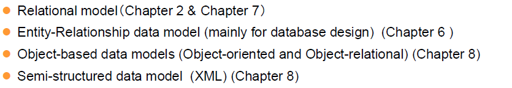
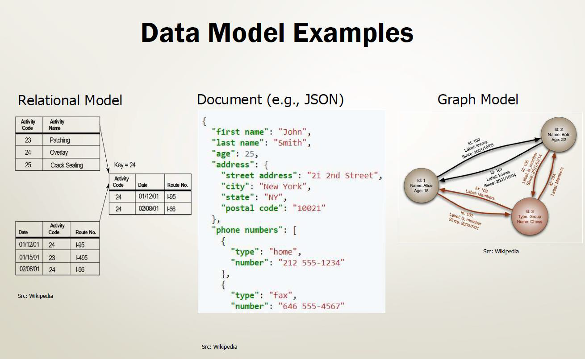
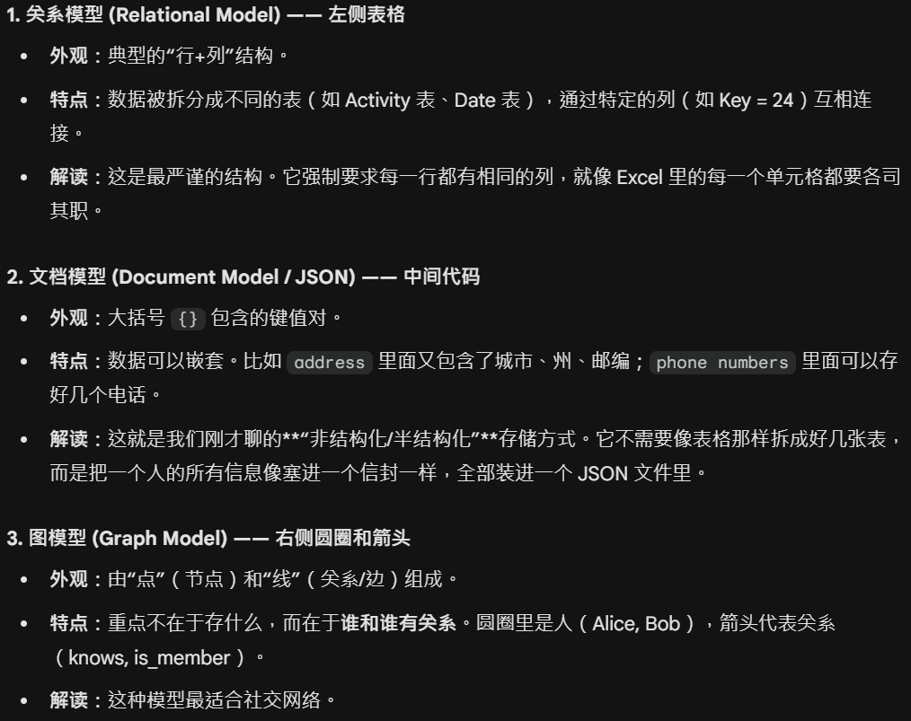
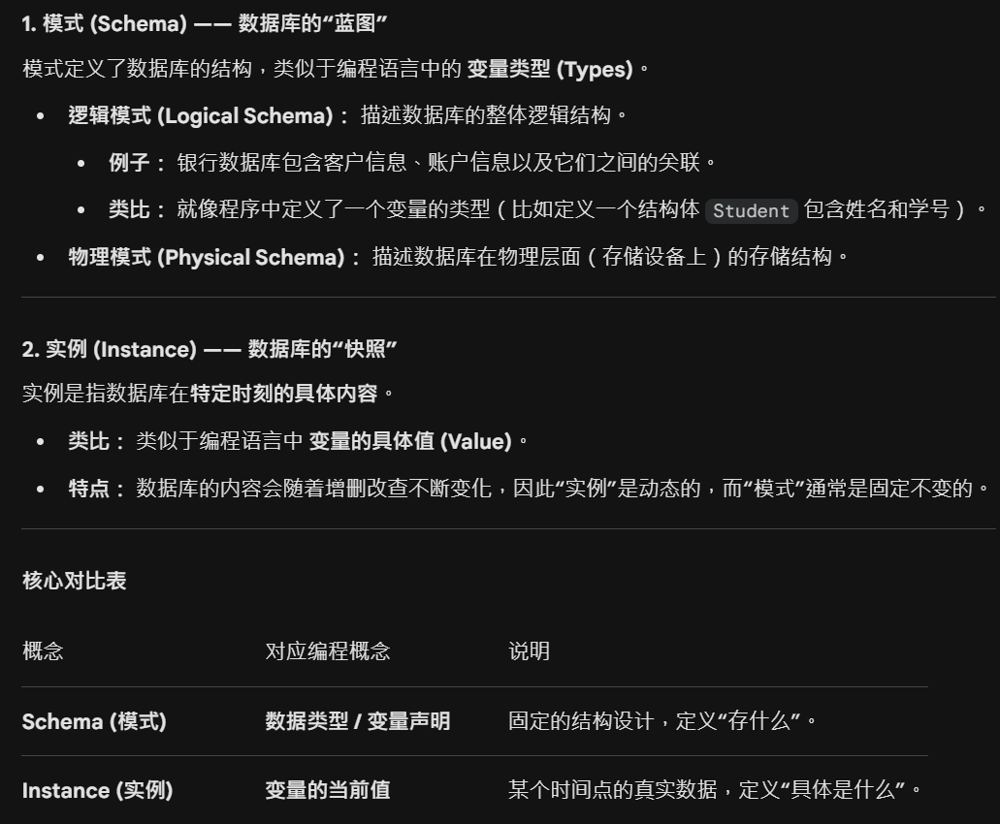

第一章 引言
数据库系统
第一章---引言
Database System Applications
- DBMS(Database-Management System): 数据库管理系统
- 目标: 提供一种高效方便地存取数据库信息地途径
- 组成:
graph TD
DBMS --> 数据库;
DBMS --> 访问数据的程序;- 数据库系统常用于管理的数据集合特征
- 高价值
- 数量庞大
-
经常同时被多个用户和应用系统访问
-
DB, DBS, DBMS
数据库: 数据的集合, 即数据本身;
数据库系统/数据库管理系统: 管理数据的软件, 用于创建, 使用, 维护数据库; 是用户与数据库的接口;
数据库系统: 有些解释数据库系统是一个 "完整的系统", 由 "数据库" "数据库管理系统(及开发工具)" "应用系统" "数据库管理员" "最终用户" "硬件平台" 等组成的 完整运行环境
Purpose Of Database Systems
- 数据管理技术的产生和发展
graph LR
人工管理 --> 文件系统 --> 数据库系统-
文件系统存储信息的优点和弊端
-
优点
- 数据可以长期保存;
- 由文件系统管理数据, 不再用之前的纸带
-
缺点
-
Data redundancy and inconsistency(数据冗余性和不一致性)
冗余: 即相同信息可能在好几个文件中重复存储(eg: 学生的姓名同时出现在学校的总学生名单和院系的学生名单中)
不一致: 即同一数据的不同副本可能不一致(eg: xx 同学的住址在文件 A 中被修改, 但是在文件 B 和 C 中还没来得及修改或伪同步)
-
Difficulty in accessing data
访问困难: 当数据需要被连续调用并且加有一定的范围限制的时候, 数据的访问就有很大的困难. (eg: 办事人员需要找到在某个限定范围的名单, 比如成绩在 70-80 之间, 但是设计者没有考虑这个问题, 没有现成的应用程序去满足需求; 如果之后办事人员又只要其中的前 20 个人, 那就更难办了)
-
Integrity Problem(完整性问题)
数据库中存储数据的值必须满足特定类型的 一致性约束(Consistency constraint): 难以添加新的约束条件或者修改已有的约束条件(eg: 退休年龄 = 65)
-
Data Isolation(数据孤立)
数据分散在不同文件中, 文件又可能格式不同, 编写程序检索适当数据很困难.
-
Atomicity Problem(原子性问题)
操作必须是原子的: 要么都发生要么都不发生(eg: 账户 A 从账户 B 贷出 100＄, 则账户 A+100 和账户 B-100 应该是都要发生或者都不发生)
-
Concurrent-access anomaly(并发访问异常)
系统应允许多个用户同时更新数据(eg: 账户 A 有 1000＄, 两个人同时从中分别贷出了 100＄ 和 400＄, 其正确的结果返回应该是 500＄, 但由于没有协调等原因, 最后可能显示 900＄ 或者 600＄)
-
Security Problem
相关职位的人员应约束为只能看到和其相关的数据(eg: 工资管理的人看数据库的财务部分, 他们不需要管学术部分的数据)
-
-
View Of Data(数据视图)
- Levels of Abstraction 数据抽象的三个层次(由低到高)
- Physical Level: 物理层. 描述数据是如何存放在硬盘上的, (比如用了什么文件格式, 存在哪个扇区等)通常只有数据库软件本身关心.
- Logical Level: 逻辑层. 描述数据库中存储了什么数据, 以及数据之间的关系. 由 DBA 和程序员关心.
- View Level: 视图层. 只描述整个数据库中的一部分, 因为大多数用户不需要看到所有数据. (出于安全考虑)
Data Medels(数据模型)
-
定义
-
一个描述数据, 数据联系, 数据语义以及数据约束的工具集合.
-
四种主要模型分类

- 关系模型 (Relational model): 最主流. 用 "表"(行和列)来组织数据.
- 实体-联系模型 (E-R model): 主要用于 设计阶段. 像画思维导图一样理清实体(如学生, 老师)及其关系.
- 基于对象的模型 (Object-based model): 结合了编程中 "对象" 的概念, 处理更复杂的数据类型.
-
半结构化模型 (Semi-structured model): 比如 XML 或 JSON, 数据结构比较灵活, 不像表格那么固定.
-
示例


Instances and Schemas (实例与模型)
- 一些解释
